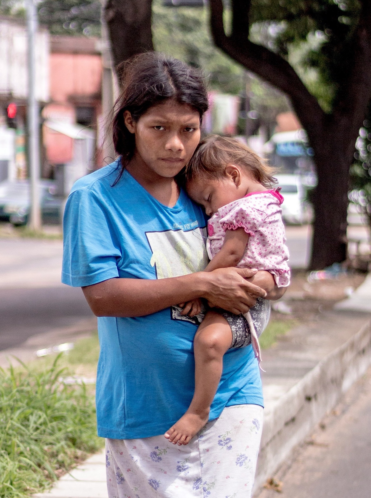

MADE FOR CHANGE

How BlockAid works

For NGOs & Donors
DISCOVER OUR IMPACT STORIES
Alisha
Razel

Every year, billions of dollars are allocated to tackle global challenges, from poverty and education to healthcare and climate change. Yet, too often, these funds face inefficiencies, lack of transparency, or fail to reach those who need them most. In a world where trust in institutions is fragile and the stakes are higher than ever, the need for efficient, impactful, and trustworthy solutions has never been more urgent.
At BlockAid, we believe technology can bridge this gap. By leveraging blockchain and smart contracts, we ensure that every dollar is tracked, every project is accountable, and every impact is measurable. No more guesswork. No more wasted resources. Just real results, delivered with transparency and precision.
Below, explore how we’re redefining aid : where data meets action, and trust is built into the process.